RAM Watch
What It Is
RAM Watch shows a list of values from the machine's memory and keeps them up to date as the game runs. RAM is the working memory of the machine. Every spot in it has an address, which is a number that names the spot. Addresses are written in hexadecimal (base 16), such as 066D. A watch is one entry in the list. It names a memory area, an address, how many bytes to read there and how to show the number.
A memory domain is one named area of the machine's memory, such as RAM or Battery RAM on the NES. For a game core, the list can also watch the game's own values by name. These are called game properties.
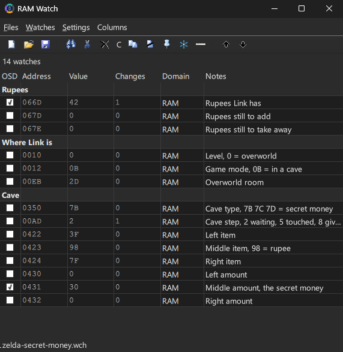
What It Is Used For
- Following a value, such as health, position or a timer, as the game runs.
- Seeing how many times a value changed.
- Poke a value, which means write a new number to that address.
- Freeze a value, which means write it again before every frame so the game cannot change it.
- Showing chosen values over the game picture.
- Saving a list in a file so you can open it later or share it.
Example, the Secret Money List for The Legend of Zelda
The picture above is a list made for The Legend of Zelda (NES) while working out how much money a secret cave gives. Its three groups are split by separators, which are rows with a title and no value.
- Rupees holds the rupee count Link has (066D), the rupees still to add (067D) and the rupees still to take away (067E). The game moves one rupee every second frame from 067D into 066D, so a reward counts up instead of jumping.
- Where Link is holds the level (0010, 0 on the overworld), the game mode (0012, 0B inside a cave) and the overworld room number (00EB).
- Cave holds the cave type (0350), the step the cave's person is on (00AD), the three item bytes (0422 to 0424) and the three amounts (0430 to 0432). In a secret money cave the middle amount, 0431, is the money Link gets.
Two watches have their OSD box ticked, so the rupee count and the secret money also show over the game picture. In the picture Link stands in a secret cave. The cave type is 7B, the step is 2 (waiting) and the middle amount is 30, so walking over the rupee will add 30.
How to Use It
- Open the Tools menu and choose RAM Watch.
- Choose Watches, New Watch (Ctrl+W). Choose the memory domain, type the address, choose the size and display type, add a note and press OK.
- Watches also arrive from RAM Search and the Hex Editor through their Add to RAM Watch items.
- Choose Watches, Insert Separator (Ctrl+I) to add a group title. Double-click it to give it a name.
- Tick a watch's OSD box to show it over the game picture.
- Right-click a watch to edit, remove, duplicate, split, poke or freeze it. The toolbar buttons do the same.
- Choose Files, Save (Ctrl+S) to keep the list in a .wch file, and Files, Open (Ctrl+O) to load one later.
The Window
The top line under the toolbar counts the watches. The line at the bottom names the open file. A star after the name means the list has changes that are not saved. A red warning icon appears at the bottom left if a watch's address is past the end of its memory domain. Click it to remove those watches.
Click a column heading to sort the list by that column. Click it again to sort the other way. Drag the edge of a heading to change the column's width, which the window remembers.
A frozen watch has a light blue row. A watch whose address is out of range has a peach row. Separator rows show their title in bold.
Columns
| Column | What it shows |
|---|---|
| OSD | A tick box. A ticked watch is shown over the game picture when Settings, Display Watches On Screen is on. OSD stands for on-screen display. |
| Address | The address that is watched, in hexadecimal. |
| Value | The current value, shown in the watch's display type. |
| Prev | The previous value, used to compare. Settings, Define Previous Value chooses what previous means. Hidden at first. |
| Changes | How many times the value changed since the count was cleared. |
| Diff | The value minus the previous value. Hidden at first. |
| Type | The display type, such as Unsigned, Signed or Hex. Hidden at first. |
| Domain | The memory domain the address is in. |
| Notes | Your own note about the watch. |
Toolbar
The toolbar buttons, from left to right, do the same as these menu items. Hold the pointer over a button to see its name.
| Button | What it does |
|---|---|
| New, Open, Save | Start an empty list, open a .wch file, save the list. |
| New Watch, Edit Watch, Cut | Add a watch, edit the selected watches, remove the selected watches. |
| C | Clear Change Counts. Sets every Changes count back to 0. |
| Duplicate Watch, Split Watch | Copy the selected watch, or split a watch of several bytes into one watch per byte. |
| Poke Address, Freeze Address | Write a new value, or keep the value fixed. |
| Separator | Insert a separator row. |
| Move Up, Move Down | Move the selected watches one row. |
Keys in the List
| Key | What it does |
|---|---|
| Delete | Removes the selected watches. |
| Ctrl+C, Ctrl+V | Copies the selected watches as text and pastes them at the end of a list, in the same or another RAM Watch. |
| Enter, double-click | Pokes the watch, or edits it, as Settings, On Double-Clicking a Watch says. On a separator it edits the title. |
| Click, Shift+click, Ctrl+click | Selects one watch, a range of watches, or adds and removes one watch from the selection. |
Menus
Files
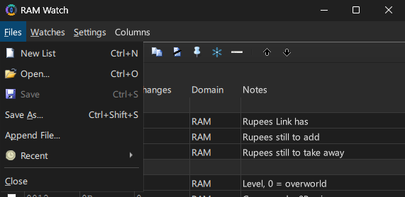
| Item | What it does |
|---|---|
| New List (Ctrl+N) | Empties the list. If the list has unsaved changes, it asks to save them first. |
| Open (Ctrl+O) | Opens a .wch file in place of the list. |
| Save (Ctrl+S) | Saves the list to its file. It asks for a name if the list has no file yet. It is grey when nothing changed. |
| Save As (Ctrl+Shift+S) | Saves the list to a new file. |
| Append File | Opens a .wch file and adds its watches to the end of the list. |
| Recent | The files opened lately. Click one to open it. It shows None when there are none. |
| Close (Alt+F4) | Closes RAM Watch. If the list has unsaved changes, it asks to save them first. |
Watches
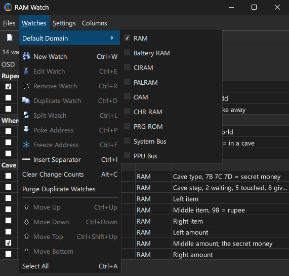
| Item | What it does |
|---|---|
| Default Domain | The memory domain a new watch starts with. The list holds every domain of the machine. On the NES these are RAM, Battery RAM, CIRAM, PALRAM, OAM, CHR RAM, PRG ROM, System Bus and PPU Bus. |
| New Watch (Ctrl+W) | Opens the New Watch window. |
| Add Game Properties | Shown only for a game core. Opens a list of the game's own named values to tick and add. |
| Edit Watch (Ctrl+E) | Opens the Edit Watch window for the selected watches. On a separator it edits the title. |
| Remove Watch (Ctrl+R) | Removes the selected watches. |
| Duplicate Watch (Ctrl+D) | Opens the Duplicate Watch window, filled in from the selected watch, to add a copy. |
| Split Watch (Ctrl+L) | Splits a watch of 2, 4 or 8 bytes into one watch per byte. |
| Poke Address (Ctrl+P) | Opens the RAM Poke window for the selected watches. |
| Freeze Address (Ctrl+F) | Freezes the selected watches, or unfreezes them if they are frozen. |
| Insert Separator (Ctrl+I) | Adds a separator row above the first selected watch, or at the end of the list when nothing is selected. |
| Clear Change Counts (Alt+C) | Sets every Changes count back to 0. |
| Purge Duplicate Watches | Asks first, then removes every watch whose domain, address and size match a watch above it. |
| Move Up, Move Down (Ctrl+Up, Ctrl+Down) | Move the selected watches one row. |
| Move Top, Move Bottom (Ctrl+Shift+Up, Ctrl+Shift+Down) | Move the selected watches to the start or the end of the list. |
| Select All (Ctrl+A) | Selects every watch. |
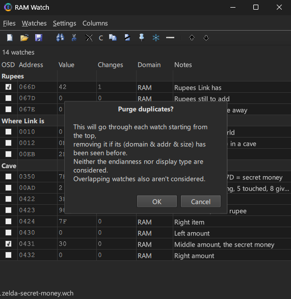
Settings
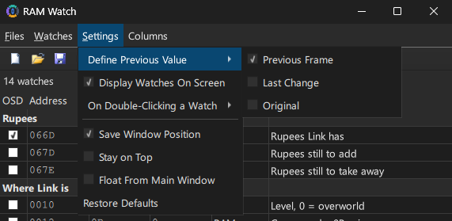
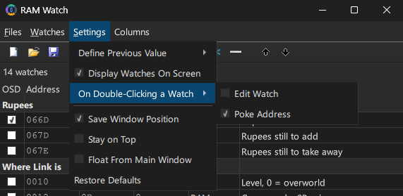
| Item | What it does |
|---|---|
| Define Previous Value | What the Prev and Diff columns compare with. Previous Frame is the value one frame ago. Last Change is the value before it last changed. Original is the first value seen after the watch was added or the list was opened. |
| Display Watches On Screen | Shows the watches with a ticked OSD box over the game picture. |
| On Double-Clicking a Watch | What a double-click or Enter does. Edit Watch opens the Edit Watch window. Poke Address opens the RAM Poke window. |
| Save Window Position | Opens RAM Watch where it was left, at the same size. On at first. |
| Stay on Top | Keeps RAM Watch above other windows. Shown only where the system allows it. |
| Float From Main Window | Makes RAM Watch a window of its own. When it is off, RAM Watch belongs to the main window, stays above it and is minimized with it. |
| Restore Defaults | Shows every column but Prev, Diff and Type, turns on Display Watches On Screen, sets a double-click to poke, and resets the window settings. |
Columns
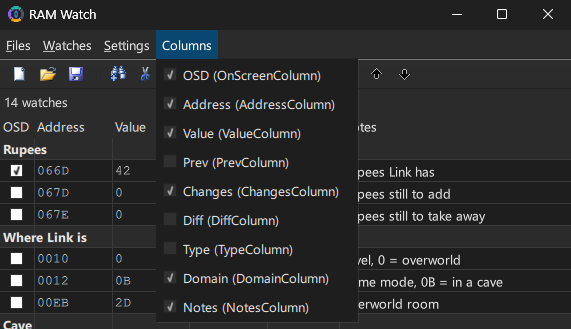
Each item shows or hides one column. The name in brackets is the column's name inside Chimera. Prev, Diff and Type are hidden at first.
Right-Click Menus
Right-click a row to open the menu for it. What the menu holds depends on what is selected.
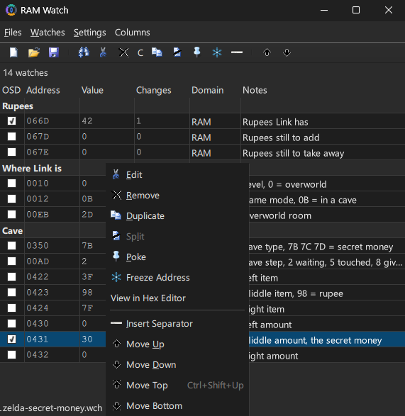
| Item | What it does |
|---|---|
| Edit (Ctrl+E) | Opens the Edit Watch window. |
| Remove (Ctrl+R) | Removes the selected watches. |
| Duplicate (Ctrl+D) | Opens the Duplicate Watch window to add a copy. |
| Split (Ctrl+L) | Splits a watch of several bytes into one watch per byte. |
| Poke (Ctrl+P) | Opens the RAM Poke window. |
| Freeze Address (Ctrl+F) | Freezes the selected watches. On a frozen watch it reads Unfreeze Address. |
| Unfreeze All | Shown only when a watch is frozen. Unfreezes every watch. |
| View in Hex Editor | Shown when one watch is selected. Opens the Hex Editor at the watch's address. |
| Insert Separator (Ctrl+I) | Adds a separator row above the selected watch. |
| Move Up, Move Down, Move Top, Move Bottom | Move the selected watches. |
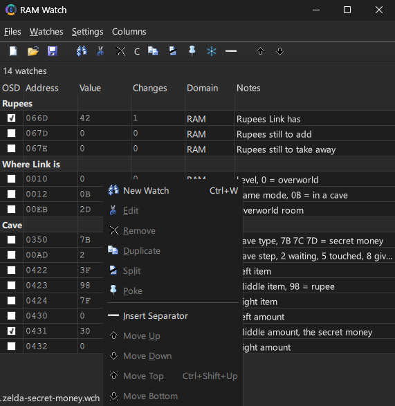
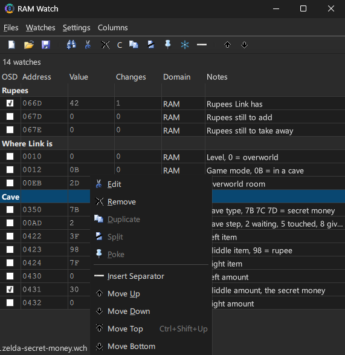
Windows That RAM Watch Opens
New Watch, Edit Watch and Duplicate Watch
These three are the same window with a different title. New Watch adds a watch. Edit Watch changes the selected watch. Duplicate Watch adds a new watch filled in from the selected one.
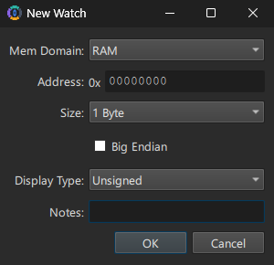
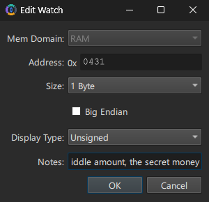
| Field | What it does |
|---|---|
| Mem Domain | The memory domain to read from. Only New Watch can change it. |
| Address | The address in hexadecimal, after the 0x. |
| Size | How many bytes to read, 1, 2, 4 or 8. |
| Big Endian | Reads a number of several bytes with its biggest byte first. Leave it off to read the smallest byte first. The NES is little endian, so leave it off there. The right choice depends on the machine. |
| Display Type | How the number is written. The choices depend on the size. |
| Notes | A label for the watch, up to 256 characters. Press Enter here to press OK. |
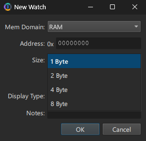
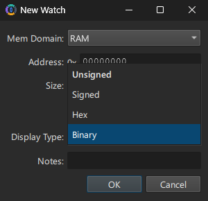
| Display type | Sizes and meaning |
|---|---|
| Unsigned | All sizes. A whole number from 0 up. |
| Signed | All sizes. A whole number that can be below 0. |
| Hex | All sizes. The number in hexadecimal. |
| Binary | 1, 2 and 4 bytes. The number as ones and zeros. |
| Fixed Point 12.4 | 2 bytes. A number with 12 bits before the point and 4 after. |
| Fixed Point 20.12, Fixed Point 16.16 | 4 bytes. Numbers with a fixed number of bits after the point. |
| Float | 4 bytes. A floating point number. |
| Double | 8 bytes. A floating point number with more precision. |
When several watches are selected, Edit Watch is named Edit Watches and changes them all. Address and Notes are greyed out there, and Big Endian can be left in a third, mixed state to keep each watch's own order.
RAM Poke
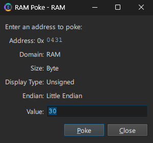
RAM Poke writes a new value to the selected watches once. The title names the memory domain. It shows the address, domain, size, display type and byte order, and the Value box starts with the current value. Type the new value in the watch's display type and press Poke. Close shuts the window without writing. For a game property it shows the property's name in place of the address.
Edit Separator
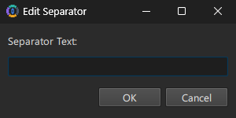
Type the title of the selected separators and press OK. It opens when you double-click a separator, or choose Edit on one.
Watches on the Game Picture
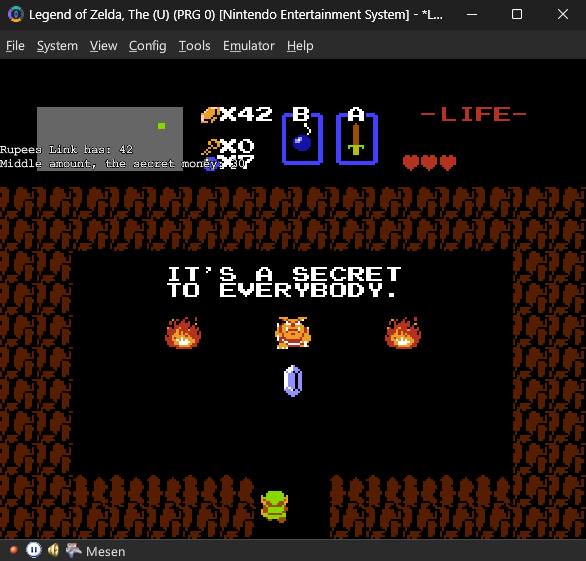
When Settings, Display Watches On Screen is on, every watch with a ticked OSD box is drawn over the game picture. Each line is the watch's note, then its value.
Watch Files
A watch list is saved as a .wch file. It is plain text with one watch on each line. The first line names the system. Each watch line holds six parts split by tabs. These are the address in hexadecimal, a size letter (b for 1 byte, w for 2, d for 4, q for 8, S for a separator), a display letter (u unsigned, s signed, h hex, b binary), 1 for big endian or 0 for little endian, the memory domain and the note. A last line, OnScreen, lists the places in the list of the watches shown on screen, counted from 0.
This is the secret money list from the example.
SystemID NES
0 S _ 0 Rupees
066D b u 0 RAM Rupees Link has
067D b u 0 RAM Rupees still to add
067E b u 0 RAM Rupees still to take away
0 S _ 0 Where Link is
0010 b u 0 RAM Level, 0 = overworld
0012 b h 0 RAM Game mode, 0B = in a cave
00EB b h 0 RAM Overworld room
0 S _ 0 Cave
0350 b h 0 RAM Cave type, 7B 7C 7D = secret money
00AD b u 0 RAM Cave step, 2 waiting, 5 touched, 8 given
0422 b h 0 RAM Left item
0423 b h 0 RAM Middle item, 98 = rupee
0424 b h 0 RAM Right item
0430 b u 0 RAM Left amount
0431 b u 0 RAM Middle amount, the secret money
0432 b u 0 RAM Right amount
OnScreen 1,15RAM Watch also opens .wch files from other emulators. Those have a count on the first line, a number before each watch and no domain. Their watches use the machine's main memory.